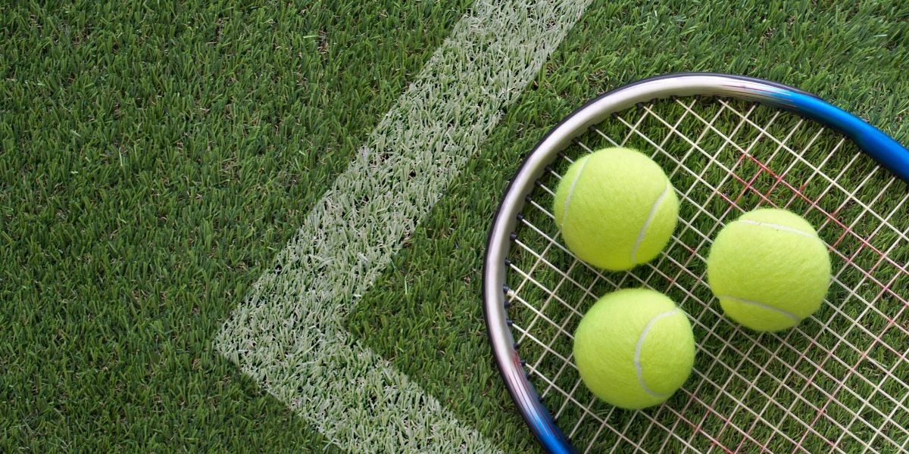

Tennis: A Sport of Elegance, Skill, and Enduring Passion

Tennis, a sport steeped in history and elegance, has captivated players and spectators alike for centuries. With its origins dating back to 12th-century France, tennis has evolved from a humble pastime to a highly competitive global sport. In this article, we will explore the rich history, rules, benefits, and enduring appeal of tennis, shedding light on why it continues to be cherished by millions around the world.Tennis, a sport of finesse, athleticism, and strategic thinking, has enthralled players and spectators for centuries. From its humble beginnings as a medieval pastime to the dazzling spectacle of modern Grand Slam tournaments, tennis has evolved into a globally cherished sport. This essay explores the history, rules, benefits, and profound impact of tennis on individuals and society, celebrating its enduring legacy as one of the world's most beloved and respected games.Tennis is known for its different playing surfaces, such as grass, clay, and hard courts, each offering distinct challenges and influencing players' playing styles. The variety in court surfaces adds an exciting dimension to the sport and showcases the adaptability and versatility of tennis professionals.
The origins of tennis can be traced back to the medieval era, where it was played as an indoor game called "jeu de paume" (game of the palm) in France. Over time, the sport evolved, and rackets were introduced, leading to the name "real tennis." Real tennis gained popularity among nobility and was played in grand courts throughout Europe.
In the 19th century, a version of tennis we recognize today began to take shape. It was known by various names such as lawn tennis or simply tennis. Major contributors to the modernization of tennis were Harry Gem and Augurio Perera, who standardized the rules and introduced the use of a net. The All England Croquet Club (now known as the All England Lawn Tennis and Croquet Club) in Wimbledon hosted the first Wimbledon Championships in 1877, becoming the world's oldest tennis tournament.
Tennis is played on a rectangular court with a net in the middle, dividing the court into two equal halves. The objective of the game is to hit the ball over the net and into the opponent's side of the court in such a way that the opponent cannot return it. Points are scored when the opponent fails to return the ball successfully.
A typical tennis match is played in a best-of-three or best-of-five sets format. To win a set, a player must win at least six games, with a two-game advantage. If the set is tied at 6-6, a tiebreak game is played. The player who wins seven points with a two-point advantage takes the set. The player who wins the majority of sets is declared the winner of the match.
Tennis offers a wide array of physical, mental, and social benefits for its participants, making it a popular choice among people of all ages. Some of the key advantages include:
Physical Fitness: Tennis is a demanding sport that requires players to run, sprint, and change direction frequently, leading to improved cardiovascular health, agility, and overall fitness.
Coordination and Balance: Hitting the ball with precision requires excellent hand-eye coordination and balance, skills that are continually refined through tennis practice.
Mental Focus: Tennis is a mentally challenging sport that demands strategic thinking, quick decision-making, and the ability to stay focused under pressure.
Social Interaction: Tennis is often played in pairs or doubles, fostering social interaction, teamwork, and the development of strong friendships.The roots of tennis can be traced back to various ancient ball games, but its true development occurred during the 12th and 13th centuries in France, where it was played as "jeu de paume," or "game of the palm." Over time, rackets were introduced, and the sport became known as "real tennis," enjoyed by European nobility in grand courts. As the game gained popularity, it underwent further transformations and eventually emerged as the modern lawn tennis we recognize today.
Major contributors to the evolution of tennis were Harry Gem and Augurio Perera, who introduced standardized rules and designed the first tennis court as we know it. The establishment of the Wimbledon Championships in 1877 marked a significant milestone, propelling tennis into the international spotlight and making it one of the most prestigious and enduring sports in history.
Tennis has managed to retain its charm and allure over the years, captivating new generations of players and fans. Its appeal lies in its combination of grace, power, and sportsmanship. Watching a well-contested tennis match between two skilled players is akin to witnessing an intense dance of strategy and athleticism.
The sport's prestigious tournaments, such as Wimbledon, the US Open, the French Open, and the Australian Open, attract massive global audiences and showcase the world's best players competing for glory on iconic courts. Tennis legends like Roger Federer, Rafael Nadal, Serena Williams, and Novak Djokovic have become household names, inspiring aspiring players and creating a sense of admiration and respect for the sport.
Moreover, tennis transcends borders and cultures, fostering international camaraderie and understanding. It brings together athletes from diverse backgrounds, encouraging mutual respect and appreciation for one another's talents.Tennis, with its storied past and dynamic gameplay, continues to enthrall enthusiasts and inspire players worldwide. Its blend of physicality, mental acuity, and sportsmanship has earned it a special place in the hearts of millions. From historic grand slam tournaments to friendly matches on local courts, tennis brings together people of diverse backgrounds, united by a shared passion for this beautiful sport. As tennis continues to evolve and adapt, it will undoubtedly remain an enduring symbol of elegance, skill, and timeless enjoyment.Tennis, with its rich history, complex gameplay, and profound impact on individuals and society, remains an enduring symbol of excellence, sportsmanship, and camaraderie. From the elegance of grass courts to the intensity of hard courts, tennis continues to captivate audiences worldwide. As players compete for Grand Slam titles and fans cheer for their favorite athletes, tennis cements its position as one of the most beloved and admired sports in the world. Beyond the boundaries of the court, the values it instills and the lessons it imparts make tennis a truly remarkable pursuit that enriches lives and unites people in the celebration of the human spirit.